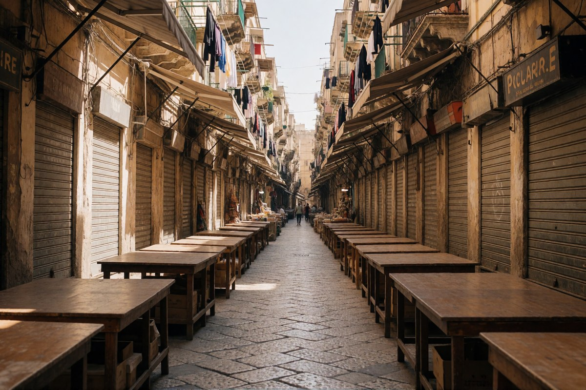

Sicilia · 9 novembre 2026
Ballarò si ferma per il funerale di un pregiudicato

A Palermo il mercato storico chiude le saracinesche al passaggio del feretro di un uomo condannato per tentato omicidio ed estorsione. Nei due giorni successivi parlano l'arcivescovo, la Regione e i residenti di via Maqueda.
di Franco Zanghì
Lunedì 9 novembre 2026, a Palermo, il mercato di Ballarò ha interrotto le proprie attività per i funerali di Emanuele Rubino, poco più di trent'anni, giudicato colpevole di tentato omicidio ed estorsione aggravata. Terminato il rito, il feretro è stato portato a spalla lungo via Maqueda, e ai commercianti è stato chiesto di abbassare le saracinesche.
Le immagini del corteo, riprese dai quotidiani locali e dalle televisioni, hanno fatto il giro dell'isola e sono diventate in poche ore un caso politico e religioso.
Le parole dell'arcivescovo
Il 10 novembre è intervenuto l'arcivescovo di Palermo, Corrado Lorefice. Che un intero mercato rionale «che per storia e tradizione esprime un forte senso di comunità» si fermi per il funerale di un uomo condannato, ha detto, «non può lasciarci solo perplessi»: deve accendere «una riflessione» e muovere a un'assunzione di responsabilità sulle «antiche e nuove ferite sociali» della città. Il feretro portato a spalla lungo via Maqueda, ha aggiunto, è un'immagine che riporta, sono le sue parole, al «passato mai passato».
Lorefice ha spostato poi il discorso sulla città intera: «Non meravigliamoci delle saracinesche che si abbassano al passaggio di un feretro osannato. Preoccupiamoci piuttosto delle saracinesche che spalanchiamo ogni giorno all'individualismo da idolatria del profitto». E ha chiesto «scelte autentiche e coraggiose» su lavoro, casa, cultura, accoglienza, legalità e mentalità mafiosa, che «non alligna solo tra le organizzazioni malavitose».
La risposta della Regione
Nella stessa giornata ha replicato l'assessore regionale all'Istruzione, Mimmo Turano. «Lo dico da cattolico impegnato in politica e con il rispetto dovuto all'arcivescovo Lorefice: sulla lettura di quanto accaduto a Ballarò non sono d'accordo con lui.»
Secondo Turano, chiedere ai commercianti di abbassare le saracinesche al passaggio del feretro di un uomo condannato «ha un chiaro significato intimidatorio», e le responsabilità «vanno accertate e attribuite a chi ha tenuto quelle condotte, non disperse in una generica condanna della società, del profitto o della politica». Allo Stato, ha aggiunto, spetta accertare «se e da chi sia stata imposta la chiusura dei negozi» e proteggere chi subisce intimidazioni; alla Chiesa, come alle istituzioni, contribuire a contrastare «una cultura che continua a riconoscere prestigio e autorità alla prepotenza».
Turano ha contestato anche il passaggio sulla marginalità: a Ballarò e nelle periferie, ha osservato, «vivono migliaia di persone che affrontano ogni giorno difficoltà economiche e rispettano la legge».
La lettera dei residenti
La sera del 10 novembre sono arrivate le parole di chi quella strada la abita. In una lettera inviata agli organi di stampa siciliani, i residenti di via Maqueda scrivono: «Da anni chiediamo alle istituzioni una normalità che ci è stata rubata, e ancora una volta ne siamo stati depredati».
E aggiungono: «Non vogliamo l'indignazione del signor sindaco, dell'arcivescovo, delle istituzioni tutte. Non accettiamo più proclami da parte di nessuno, aneliamo solamente legalità». Anni di promesse non mantenute, sostengono, hanno fatto nascere l'idea che «via Maqueda alta è terra di nessuno, qui tutto si può, qui non esiste la legge. Noi non ci stiamo».
Il punto
Su una cosa l'arcivescovo e l'assessore dicono la stessa: quelle saracinesche non si sono abbassate da sole. Dove si separano è sul peso delle responsabilità, se vada messo sulle condizioni di un quartiere o sulle scelte di chi quelle condotte le ha tenute. La lettera dei residenti, però, sposta la questione dove dovrebbe stare: non in un dibattito, ma in una verifica. Chi ha chiesto di chiudere, e perché nessuno era lì a impedirlo.
Fonti
- ANSA, «Corteo per funerali pregiudicato: arcivescovo Palermo, aprire riflessione», 10 novembre 2026
- ANSA, «Corteo per pregiudicato: assessore Sicilia, anche Chiesa deve interrogarsi», 10 novembre 2026
- ANSA, «Appello dei residenti dopo funerale-show a Palermo, pretendiamo legalità», 10 novembre 2026
- Gazzetta del Sud, «Palermo, saracinesche calate a Ballarò per i funerali di Emanuele Rubino», 9 novembre 2026
Alla data di pubblicazione non risultano provvedimenti giudiziari sulla chiusura dei negozi: la verifica su chi l'abbia eventualmente chiesta era appena stata sollecitata.